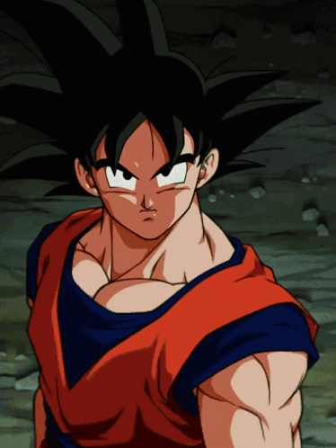

DRAGON BALL Z : l’histoire
 [cliquez sur la boule de cristal pour lancer/stopper la musique]
[cliquez sur la boule de cristal pour lancer/stopper la musique]
Cinq ans après son mariage, Son Goku mène une vie paisible avec Chichi et leur fils Gohan. Cette tranquillité vole en éclats avec l’arrivée de Raditz, un guerrier venu de l’espace qui se révèle être son frère. Goku apprend qu’il est un Saiyan, une race de conquérants, envoyé enfant sur Terre sous le nom de Kakarotto. Raditz enlève Gohan, et Goku s’allie à son ancien ennemi Piccolo pour le vaincre, mais il y laisse la vie. Il s’entraîne dans l’au-delà auprès de Kaïo, tandis que Piccolo prépare le petit Gohan au combat.

Un an plus tard, deux autres Saiyans, Végéta et Nappa, débarquent pour s’emparer des Dragon Balls. Les Guerriers Z se sacrifient les uns après les autres. Ressuscité à temps, Goku affronte Végéta lors d’un duel d’une rare intensité, qui le force à fuir. Végéta se tourne alors vers la planète Namek, où se trouvent d’autres Dragon Balls. Goku, Krillin, Gohan et Bulma s’y rendent aussi, et tous se retrouvent face à Freezer, l’empereur de l’univers, tyran cruel à la puissance terrifiante. Après la mort de Krillin, la colère de Goku explose : il se transforme en Super Saiyan, la légende des guerriers dorés, et met fin à Freezer.
Trois ans plus tard, Trunks, un jeune homme venu du futur, prévient Goku que des Cyborgs détruiront le monde. Il lui apporte aussi un remède contre une maladie du cœur qui le menaçait. L’ennemi se révèle plus complexe que prévu : en plus des Cyborgs du Dr Gero, Cell, une créature artificielle qui absorbe ses adversaires pour se perfectionner, devient le véritable danger. Il organise les Cell Games, un grand tournoi mondial. Goku cède sa place à son fils, et Gohan, poussé à bout, atteint le stade de Super Saiyan 2 et terrasse Cell, mais Goku y perd la vie.
Sept ans plus tard, Gohan est au lycée et mène une double vie de justicier, tandis que Goku revient le temps d’un tournoi. Un sorcier, Babidi, réveille alors Boo, un monstre rose d’une puissance colossale, et tente de faire revenir à la vie son ancien maître. Végéta, manipulé, redevient un temps le prince impitoyable d’autrefois, puis se sacrifie. Goku, Gohan, Végéta et les autres rivalisent d’ingéniosité pour contrer cette force destructrice : fusions, nouvelles transformations, entraînement dans la salle de l’Esprit et du Temps. Boo se divise, absorbe ses adversaires et cause un carnage. Finalement, Goku rassemble l’énergie de toute l’humanité pour l’ultime Genkidama et détruit Boo. Il se réincarne ensuite en un jeune garçon, Oob, qui s’entraînera pour devenir le futur champion de la Terre.
Plus sombre et plus épique que son prédécesseur, Dragon Ball Z est un récit de sacrifice, de dépassement de soi et de rédemption, qui a marqué des générations de lecteurs et de téléspectateurs.